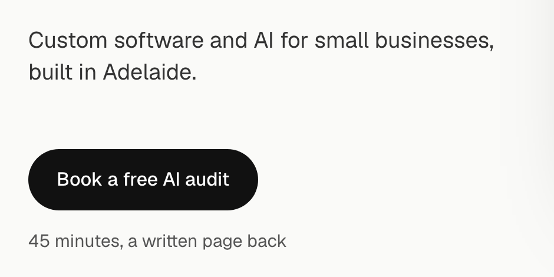

Hero detail 5: the button
Today the hero button is a black pill with no arrow, and the header button is a smaller black pill with one. The “45 minutes, a written page back” note stays as it is in all three. Each option keeps the button’s bottom on the board’s bottom edge. Button zoomed on the left, in place on the right.
TodayBlack pill, 16px, no arrow. For comparison, not an option.


1. Add the arrowSame black pill, with the arrow the header button already has. The smallest change, and the two buttons on the screen match. Recommended.
2. Squarer cornersThe arrow, and the corners rounded to match the board’s window instead of a full pill, so the button looks like part of the software. The header button follows. Moves furthest from the old site’s pill shape.
3. BiggerThe arrow, larger text and more padding, so the button carries more weight against the 72px headline. The loudest.